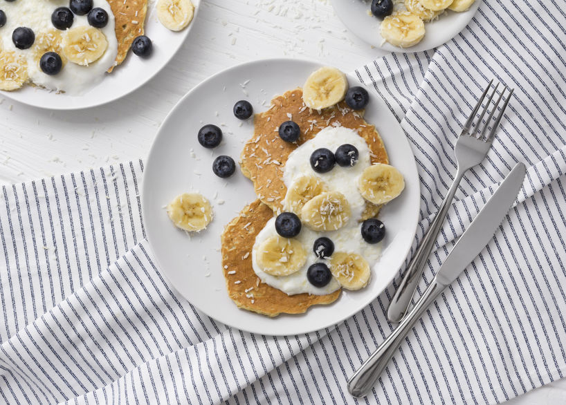

Panqueques Matutinos

El desayuno perfecto para arrancar el dia con energia y fuerza
Los pancakes de avena son ideales para servir durante el desayuno o la merienda,
puesto que además de resultar fáciles de hacer y rápidos, ¡están deliciosos!
Ingredientes:
Para el panqueque:
- Avena x 4 cucharadas
- Chia x 1 cucharada
- Huevo x 2 unidades
Para hacerlo mas rico:
- Yogurt Griego x 3 cucharadas
- Banana x 1 unidad
- Durazno x 1 unidad
- Ciruela x 1 unidad
Pasos:
- Dejar en remojo la avena junto con la chia en un bowls toda la noche en la heladera.
- Agregar los huevos al bowls con la avena y la chia ya hidratadas. Mezclar bien asi los ingredientes se unen.
- Poner la pasta en una sarten o panququera a fuego minimo, tapado.
- Dar vuelta una vez que el panqueque este cocinado de un lado.
- Apagar el fuego y poner el panqueque en un plato una vez que este hecho.
- Dejar que se enfrie un poco unos minutos.
- Untarlo con yogurt (Puedes ver como hacer tu propio yogurt griego en este enlace.)
- Agregar la fruta cortada en rodajas. Recomiendo primero la banana, despues el durazno y por ultimo en el centro la ciruela.
Y ahora a disfrutar de un desayuno con fuerza!